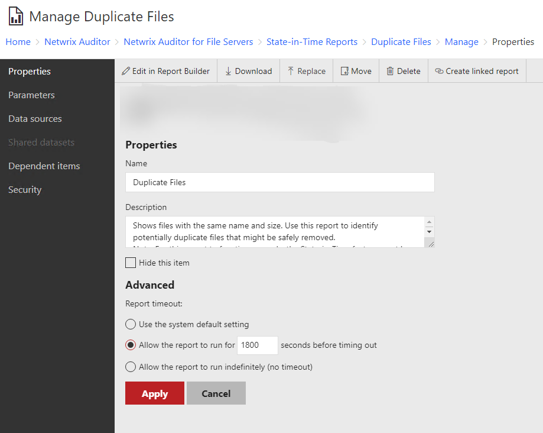

Symptom
When running State-in-Time reports for items that contain large amount of data, the report completes with the following error:
Sys.WebForms.PageRequestManagerServerErrorException: An unknown error occurred while processing the request on the server.
The status code returned from the server was: 500.
Cause
The error occurs due to large amount of processed data.
Resolution
Extend the report timeout on the on the Report Manager URL. For that:
-
Go to your Report Manager URL: in Netwrix Auditor, navigate to Settings -> Audit Database and click the Report Manager URL link.
-
Find the problematic report and open it.
-
Click the 3 dots in the Reports Manager for the report itself, then click Manage.
-
In the Advanced section, modify the report timeout settings.
